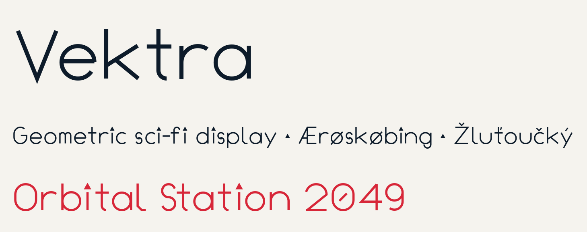

Vektra is a minimal geometric sci-fi display typeface. Every letter, figure, and symbol is built from straight lines and true circular arcs, drawn with a single monoline stroke, flat-cut terminals, and needle-sharp mitred apexes.

Round capitals are stadiums, with semicircles joined by straight sides. The lowercase uses full-circle bowls on a 480-unit x-height. The dots are solid triangles: the period, the colon, the dots on i and j, and the umlauts.
Vektra covers Google Fonts' Latin Core character set, the Latin languages of Northern, Western, Central, and Eastern Europe. It is designed for headlines, posters, interfaces, game titles, and display typography at 24 px and up.
To contribute, see github.com/q78717/font-vektra.